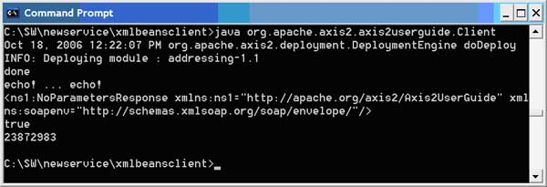

Generating a Web Service Client using Apache Axis2 and XMLBeans
This document explains how to generate a Web service client using Apache Axis2 and XMLBeans data binding. The service has the following WSDL:
Code Listing 1: The WSDL file
<?xml version="1.0" encoding="UTF-8"?>
<wsdl:definitions
xmlns:apachesoap="http://xml.apache.org/xml-soap"
xmlns:impl="http://apache.org/axis2/Axis2UserGuide"
xmlns:intf="http://apache.org/axis2/Axis2UserGuide"
xmlns:wsdl="http://schemas.xmlsoap.org/wsdl/"
xmlns:wsdlsoap="http://schemas.xmlsoap.org/wsdl/soap/"
xmlns:xsd="http://www.w3.org/2001/XMLSchema"
targetNamespace="http://apache.org/axis2/Axis2UserGuide">
<wsdl:types>
<schema
elementFormDefault="qualified"
targetNamespace="http://apache.org/axis2/Axis2UserGuide"
xmlns="http://www.w3.org/2001/XMLSchema">
<!-- ELEMENTS -->
<element name="DoInOnlyRequest">
<complexType>
<sequence>
<element name="messageString" type="xsd:string"/>
</sequence>
</complexType>
</element>
<element name="TwoWayOneParameterEchoRequest">
<complexType>
<sequence>
<element name="echoString" type="xsd:string"/>
</sequence>
</complexType>
</element>
<element name="TwoWayOneParameterEchoResponse">
<complexType>
<sequence>
<element name="echoString" type="xsd:string"/>
</sequence>
</complexType>
</element>
<element name="NoParametersRequest">
<complexType/>
</element>
<element name="NoParametersResponse">
<complexType/>
</element>
<element name="MultipleParametersAddItemRequest">
<complexType>
<sequence>
<element name="itemId" type="xsd:int"/>
<element name="itemName" type="xsd:string"/>
<element name="price" type="xsd:float"/>
<element name="description" type="xsd:string"/>
</sequence>
</complexType>
</element>
<element name="MultipleParametersAddItemResponse">
<complexType>
<sequence>
<element name="itemId" type="xsd:int"/>
<element name="successfulAdd" type="xsd:boolean"/>
</sequence>
</complexType>
</element>
</schema>
</wsdl:types>
<!-- MESSAGES -->
<wsdl:message name="DoInOnlyRequestMessage">
<wsdl:part name="input" element="impl:DoInOnlyRequest"/>
</wsdl:message>
<wsdl:message name="TwoWayOneParameterEchoRequestMessage">
<wsdl:part name="input" element="impl:TwoWayOneParameterEchoRequest"/>
</wsdl:message>
<wsdl:message name="TwoWayOneParameterEchoResponseMessage">
<wsdl:part name="output" element="impl:TwoWayOneParameterEchoResponse"/>
</wsdl:message>
<wsdl:message name="NoParametersRequestMessage">
<wsdl:part name="input" element="impl:NoParametersRequest"/>
</wsdl:message>
<wsdl:message name="NoParametersResponseMessage">
<wsdl:part name="output" element="impl:NoParametersResponse"/>
</wsdl:message>
<wsdl:message name="MultipleParametersAddItemRequestMessage">
<wsdl:part name="input" element="impl:MultipleParametersAddItemRequest"/>
</wsdl:message>
<wsdl:message name="MultipleParametersAddItemResponseMessage">
<wsdl:part name="output" element="impl:MultipleParametersAddItemResponse"/>
</wsdl:message>
<!-- Port type (operations) -->
<wsdl:portType name="Axis2UserGuidePortType">
<wsdl:operation name="DoInOnly" parameterOrder="input">
<wsdl:input name="DoInOnlyRequestMessage"
message="impl:DoInOnlyRequestMessage"/>
</wsdl:operation>
<wsdl:operation name="TwoWayOneParameterEcho" parameterOrder="input">
<wsdl:input name="TwoWayOneParameterEchoRequestMessage"
message="impl:TwoWayOneParameterEchoRequestMessage"/>
<wsdl:output name="TwoWayOneParameterEchoResponseMessage"
message="impl:TwoWayOneParameterEchoResponseMessage"/>
</wsdl:operation>
<wsdl:operation name="NoParameters" parameterOrder="input">
<wsdl:input name="NoParametersRequestMessage"
message="impl:NoParametersRequestMessage"/>
<wsdl:output name="NoParametersResponseMessage"
message="impl:NoParametersResponseMessage"/>
</wsdl:operation>
<wsdl:operation name="MultipleParametersAddItem" parameterOrder="input">
<wsdl:input name="MultipleParametersAddItemRequestMessage"
message="impl:MultipleParametersAddItemRequestMessage"/>
<wsdl:output name="MultipleParametersAddItemResponseMessage"
message="impl:MultipleParametersAddItemResponseMessage"/>
</wsdl:operation>
</wsdl:portType>
<!-- BINDING (bind operations) -->
<wsdl:binding
name="Axis2UserGuideSoapBinding"
type="impl:Axis2UserGuidePortType">
<wsdlsoap:binding style="document" transport="http://schemas.xmlsoap.org/soap/http"/>
<wsdl:operation name="DoInOnly">
<wsdlsoap:operation soapAction="DoInOnly"/>
<wsdl:input>
<wsdlsoap:body use="literal"/>
</wsdl:input>
</wsdl:operation>
<wsdl:operation name="TwoWayOneParameterEcho">
<wsdlsoap:operation soapAction="TwoWayOneParameterEcho"/>
<wsdl:input>
<wsdlsoap:body use="literal"/>
</wsdl:input>
<wsdl:output>
<wsdlsoap:body use="literal"/>
</wsdl:output>
</wsdl:operation>
<wsdl:operation name="NoParameters">
<wsdlsoap:operation soapAction="NoParameters"/>
<wsdl:input>
<wsdlsoap:body use="literal"/>
</wsdl:input>
<wsdl:output>
<wsdlsoap:body use="literal"/>
</wsdl:output>
</wsdl:operation>
<wsdl:operation name="MultipleParametersAddItem">
<wsdlsoap:operation soapAction="MultipleParametersAddItem"/>
<wsdl:input>
<wsdlsoap:body use="literal"/>
</wsdl:input>
<wsdl:output>
<wsdlsoap:body use="literal"/>
</wsdl:output>
</wsdl:operation>
</wsdl:binding>
<!-- SERVICE -->
<wsdl:service name="Axis2UserGuideService">
<wsdl:port binding="impl:Axis2UserGuideSoapBinding"
name="Axis2UserGuide">
<wsdlsoap:address location="http://localhost:8080/axis2/services/Axis2UserGuide"/>
</wsdl:port>
</wsdl:service>
</wsdl:definitions>
Note that the document defines four operations, DoInOnly, NoParameters, TwoWayOneParameterEcho, and MultipleParametersAddItem. Each client will include methods for calling each of these operations.
(For more information on WSDL, refer to: http://www.w3.org/2002/ws/desc/ .)
The short story:
- Download and unpack the Apache Axis2 Standard Distribution, if you have not done so already.
- Create the client classes with the following command:
%AXIS2_HOME%\bin\WSDL2Java -uri Axis2UserGuide.wsdl -p org.apache.axis2.axis2userguide -d xmlbeans -s
- Create the client (for example, Client.java) and save it in the org/apache/axis2/axis2userguide directory.
- Build the client by typing: ant jar.client.
- Make sure all the .jar files in the Axis2 lib directory are in the CLASSPATH.
- Assuming you have a corresponding service, run the client by adding the generated Axis2UserGuideService-test-client.jar file in build/lib to the CLASSPATH and type: java org.apache.axis2.axis2userguide.Client
The long story:
Download and unpack the Apache Axis2 Standard Distribution, if you have not done so already. The WAR distribution does not include the necessary utilities for generating code, such as WSDL2Java.
The XMLBeans method of generating clients, unlike ADB, creates individual classes for each object it must model. For example, generating a client for this WSDL file created 642 files and folders. A small number of these files are directly related to the actual client you're creating. The rest are related to the processing of XML, and include data bound objects for schemas, encodings, and other objects needed to process messages.
To generate the client, issue the following command in Listing 2.
Code Listing 2. Generating the client
%AXIS2_HOME%\bin\WSDL2Java -uri Axis2UserGuide.wsdl -p org.apache.axis2.axis2userguide -d xmlbeans -s
This command analyzes the WSDL file and creates the stubs in the package org.apache.axis2.axis2userguide. The options specify that you want the XMLBeans data binding method (-d), and synchronous or blocking methods (-s). In other words, when the client makes an In-Out call to the service, it will wait for a response before continuing.
Once you run this command, you will see several new items in the directory. The first is the build.xml file, which contains the instructions for Ant to compile the generated classes. The second is the src directory, which contains all the generated classes. The third is the resources directory, which includes files related to the actual data binding process.
Now you need a client. To create a client, create a new class and save it as Client.java in the org/apache/axis2/axis2userguide directory. It should contain the following code in Listing 3.
Code Listing 3: Client.java
package org.apache.axis2.axis2userguide;
public class Client{
public static void main(java.lang.String args[]){
try{
Axis2UserGuideServiceStub stub =
new Axis2UserGuideServiceStub
("http://localhost:8080/axis2/services/Axis2UserGuideService");
doInOnly(stub);
twoWayOneParameterEcho(stub);
noParameters(stub);
multipleParameters(stub);
} catch(Exception e){
e.printStackTrace();
System.out.println("\n\n\n");
}
}
/* fire and forget */
public static void doInOnly(Axis2UserGuideServiceStub stub){
try{
DoInOnlyRequestDocument req =
DoInOnlyRequestDocument.Factory.newInstance();
DoInOnlyRequestDocument.DoInOnlyRequest data =
req.addNewDoInOnlyRequest();
data.setMessageString("fire and forget it!");
stub.DoInOnly(req);
System.out.println("done");
} catch(Exception e){
e.printStackTrace();
System.out.println("\n\n\n");
}
}
/* two way call/receive */
public static void twoWayOneParameterEcho(Axis2UserGuideServiceStub stub){
try{
TwoWayOneParameterEchoRequestDocument req =
TwoWayOneParameterEchoRequestDocument.Factory.newInstance();
TwoWayOneParameterEchoRequestDocument.TwoWayOneParameterEchoRequest data =
req.addNewTwoWayOneParameterEchoRequest();
data.setEchoString("echo! ... echo!");
TwoWayOneParameterEchoResponseDocument res =
stub.TwoWayOneParameterEcho(req);
System.out.println(res.getTwoWayOneParameterEchoResponse().getEchoString());
} catch(Exception e){
e.printStackTrace();
System.out.println("\n\n\n");
}
}
/* No parameters */
public static void noParameters(Axis2UserGuideServiceStub stub){
try{
NoParametersRequestDocument req =
NoParametersRequestDocument.Factory.newInstance();
NoParametersRequestDocument.NoParametersRequest data =
req.addNewNoParametersRequest();
System.out.println(stub.NoParameters(req));
} catch(Exception e){
e.printStackTrace();
System.out.println("\n\n\n");
}
}
/* multiple parameters */
public static void multipleParameters(Axis2UserGuideServiceStub stub){
try{
MultipleParametersAddItemRequestDocument req =
MultipleParametersAddItemRequestDocument.Factory.newInstance();
MultipleParametersAddItemRequestDocument.
MultipleParametersAddItemRequest data =
req.addNewMultipleParametersAddItemRequest();
data.setPrice((float)1.99);
data.setItemId((int)23872983);
data.setDescription("Must have for cooking");
data.setItemName("flour");
MultipleParametersAddItemResponseDocument res =
stub.MultipleParametersAddItem(req);
MultipleParametersAddItemResponseDocument.
MultipleParametersAddItemResponse dataRes =
res.getMultipleParametersAddItemResponse();
System.out.println(dataRes.getSuccessfulAdd());
System.out.println(dataRes.getItemId());
} catch(Exception e){
e.printStackTrace();
System.out.println("\n\n\n");
}
}
}
XMLBeans uses a different architecture from ADB. In XMLBeans, processing centers around documents, which are created through the use of factories, and which include inner classes for the objects they contain. The process is still the same -- you create a request, and send it using the stub -- the code is just a bit more complex.
To build the client, type: ant jar.client
This action creates two new directories, build and test. The test directory will be empty, but the build directory will contain two versions of the client. The first version in the lib directory consists of two .jar files, one containing the Client class and the stub implementations, and the other containing the XMLBeans-related classes. The second version in the classes directory consists of just the raw classes.
Make sure all the .jar files in the Axis2 lib directory are on the classpath.
If you have a service corresponding to this client (if you don't, check out the Building Services document) you can run the client by adding the two .jar files to your classpath and typing: java.org.apache.axis2.axis2userguide.Client
You should see the response in a console window of your servlet container. It should look something like this:
